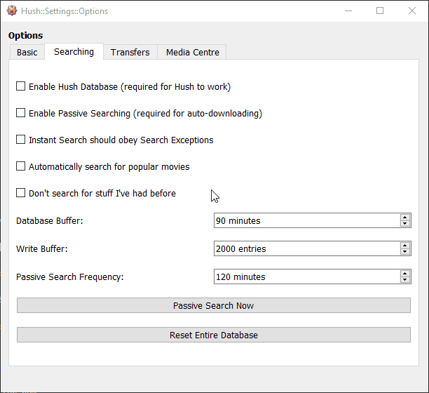

The Options window has a Searching tab which lists options and functions related to searching for content with Hush. See the animation below to see the current options.

The Enable Hush Database option lets you toggle the script code Hush uses to build a database of content on your local computer. This option must be ticked for any searching to work in Hush (passive and instant). The main reason this option is here is for if you think Hush may be adversely affecting your computer or KVIrc client. You can switch almost all of the background work Hush does by unticking this option to see if it makes a difference.
The Enable Passive Searching option toggles whether the passive searching searching system is active. Passive Search allows you to have Hush watch for a list of things you want to download and it will download anything that becomes available from that list (the Searches list). The Passive Search system has been designed to be "smart" so that it tries to not download any duplicate content. It has been designed to replace use of "subscription" systems some IRC channels offer giving the advantage of your subscription data existing only on your local machine.
The Instant Search should obey Search Exceptions option decides whether Instant Search will obey Search Exceptions or not. Search Exceptions were initially designed for the Passive Searching system but it became apparent that it is useful to have the option to have them applied also to Instant Search. It is arguably as convenient to not have Instant Search obeying Search Exceptions, hence the toggle option. Instant Search will also display a message to advise you if this option may be affecting you finding search results.
The Automatically search for popular movies option toggles a background system that will automatically fetch popular, upcoming movie titles from IMDB.com and converts them into entries in the Searches list. This system allows you to not have to think about what movie titles you want to get, as long as you're happy to download all the mainstream, popular movies form the US. Be advised that this option will add approximately 120 entries to the Searches list so you may like to export your settings first before trying this option.
The Don't search for stuff I've had before option toggle whether automated systems will look for content that you have had on your system before - including content you have deleted. This feature aims to let you remove old, unwatched or watched content which is now defunct to free up storage space and Hush will not re-search for or re-download that deleted content.
The Database Buffer option defines how often announce data will be discarded from the database. The value of this buffer is in minutes because as pack announce data gets older it becomes more unreliable, so it is economical to delete it once it reaches a certain age. If you set this to 60 minutes, when you use instant search all the results will be no older than 60 minutes. The higher you set this value, the more disk space the database file will consume, but you have access to older data.
The Write Buffer option defines how often announce data will be written to the database. The value of this buffer is in entries. An entry is one pack announcement message. When a message occurs in one of your watched channels, the message is analyzed and if it is deemed to be a pack announce it is stored in RAM. When we have enough entries in RAM, they are saved to the database. The time it takes for this to happen will vary depending on how many channels are being watched, how many bots there are in each channel, how often the bots announce packs on offer, lag and so on. The higher you set this value, the less frequent the database will be written to and the longer it takes for new announce data to become available for searching. The average time with the default settings, watching 5 major channels roughly equals a database write and new searchable data every 40 seconds.
The Passive Search Frequency option defines how often a Passive Search is triggered. Depending on how much content you download and how often it releases you can change this option to suit.
You can trigger a Passive Search manually using this button.
You can reset all of Hush's databases by clicking this button. It will reset the harvested content records as well as the "smart mode" database.